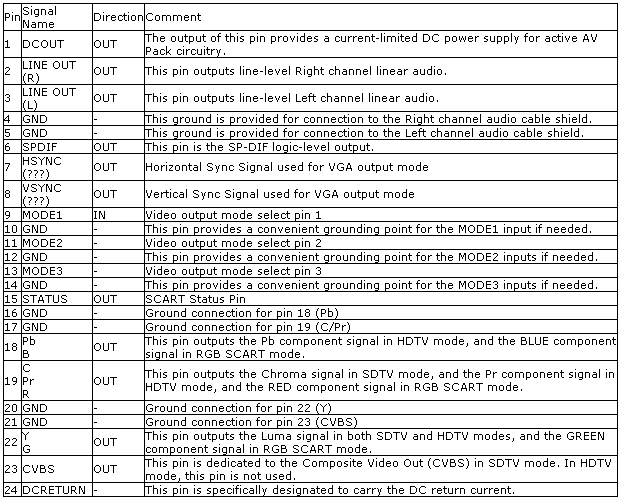
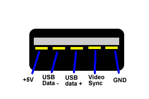
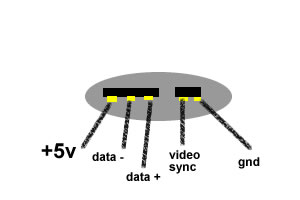

XBOX
PLUG PINOUTS
AUDIO / VIDEO

MAINBOARD
SOLDER POINTS
POWER SUPPLY V1.0 / 1.1
Pin_________Desc._________Wire Color
1___________+12V____________Yellow
2___________+5V_____________Red
3___________+5V_____________Red
4___________+5V_____________Red
5___________+3.3V___________Orange
6_________+3.3V STBY________Brown
7___________GND____________Black
8___________GND____________Black
9___________GND____________Black
10__________GND____________Black
11_________Power on_________White
12_________Power OK_________Blue
Molex Power Connector (Hard drive
power cable)
Desc._____Wire Color
+12V_____Yellow
GND______Black
GND______Black
+5V_______Red
ATA Connector (HDD/DVD IDE cable)
Pin____Name___Comment_____Pin____Name___Comment
1______Reset__________________2_____Ground___________
3______Data7__________________4_____Data8____________
5______Data6__________________6_____Data9____________
7______Data5__________________8_____Data10___________
9______Data4__________________10____Data11___________
11_____Data3__________________12____Data12___________
13_____Data2__________________14____Data13___________
15_____Data1__________________16____Data14___________
17_____Data0__________________18____Data15___________
19_____GND___________________20____Key_____Blank Pin for polarizing
21____DMARQ__DMA Request_____22____GND_____________
23____DIOW____I/O Write________24____GND______________
25____DIOR____I/O Read_________26____GND_____________
27____IORDY___I/O Ready________28____CSEL__Cable Select
29____DMACK__DAM Ackknowledge_30____GND_____________
31____INTRQ__Interrupt Req.______32____IOCS16__16bit I/O
33____DA1____Device Addr. Bit 1___34____PDIAG__Passed Diagnostics
35____DA0____Device Addr. Bit 0___36____DA2__Device Addr. Bit 2
37____CS0____Chip Select 0_______38____CS1__Chip select 1
39____DASP___Dev. Activity_______40____GND______________
DVD-ROM Power/Data Connector
Pin_____Name______Comment
1_______12VDC______+12V Power
2_______5VDC_______+5V Power
3_______GND________Ground
4_______Eject________Active low tray eject
5_______TS0_________Traystate status 0
6_______TS1_________Traystate status 1
7_______TS2_________Traystate status 2
8_______Activity______Disk seek/Data transfer
9_______12VDC______+12V Power
10______5VDC_______+5V Power
11______GND________Ground
12______GND________Ground
13______Key_________Not Connected
14_________Blank For Polarizing___________
Front Panel Connector (power/eject
assembly)
Pin______Comment
1________Ground
2________Power Switch
3________Ground
4________Eject Switch
5________Green LED
6________Red LED
7________Red LED
8________Green LED
9________Not Connected but wired
10_______No pin.
Ethernet Connector Pinout
Pin_____Desc._____Wire Color
1_____Transmit +_____Orange Stripe
2_____Transmit -______Orange
3_____Recieve +______Green Stripe
4_____Not Connected__Blue
5_____Not Connected__Blue Stripe
6_____Recieve -______Green
7_____Not Connected__Brown Stripe
8_____Not Connected__Brown
Controller Port

Memory Card Slot
